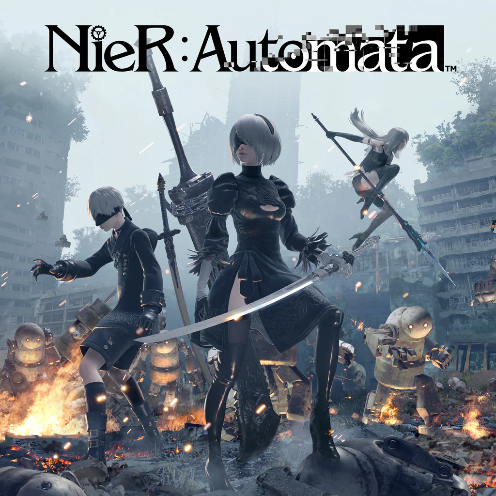

Games
Cyberpunk

Cyberpunk 2077 é uma imersão total em um futuro distópico onde tudo é possível — por um preço. Em Night City, uma cidade caótica e vibrante que nunca dorme, você joga como V, um mercenário à beira da fama ou da queda, buscando o maior prêmio de todos: a chave para a imortalidade. Prepare-se para enfrentar megacorporações, hackers brutais e gângsteres imprevisíveis, enquanto explora um mundo neon cheio de mistérios e escolhas que impactam cada canto da cidade. Personalize armas, implantes cibernéticos e habilidades, escolha seu caminho (ou crie o seu!) e lembre-se: em Night City, a única regra é sobreviver... com estilo.
Dark souls

Dark Souls é uma jornada sombria e brutal em um mundo onde a morte é apenas o começo. Você é um morto-vivo amaldiçoado, perdido no desespero de Lordran, um reino em ruínas habitado por monstros e seres lendários. Em uma terra onde cada passo é um desafio e cada inimigo é mortal, você precisa aprender com cada falha, aprimorar suas habilidades e forjar seu próprio caminho. Teste sua coragem, enfrente chefes colossais e descubra segredos ancestrais enquanto luta para acender a chama... ou abraçar a escuridão!
Nier Automata
NieR: Automata é uma aventura filosófica e cheia de ação em um futuro pós-apocalíptico onde androides e máquinas travam batalhas incessantes pela sobrevivência de uma humanidade que já nem está mais lá. Você joga como 2B, uma androide guerreira de elite, e seus aliados 9S e A2, em uma missão para recuperar o planeta Terra. Em meio a combates frenéticos, você vai enfrentar perguntas profundas sobre identidade, propósito e o que realmente significa "estar vivo". Prepare-se para um turbilhão de emoção, com música intensa, visuais deslumbrantes e um enredo que só fica mais surpreendente a cada vez que você joga!
Sekiro

Sekiro: Shadows Die Twice é um jogo de ação e aventura desenvolvido pela FromSoftware, lançado em 2019. Ambientado no Japão feudal, ele segue a história de um shinobi chamado Wolf, que busca resgatar seu mestre sequestrado e vingar a morte de sua família. O jogo é conhecido por sua alta dificuldade, combate preciso e mecânicas de parry, onde o jogador deve dominar o timing das defesas e contra-ataques. Além disso, o jogo introduz o conceito de "morte" com a habilidade de ressuscitar, dando ao título uma dinâmica única de risco e recompensa. Com uma narrativa envolvente e um mundo aberto interconectado, Sekiro desafia os jogadores com sua ação intensa e mecânicas de exploração.